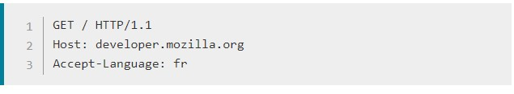
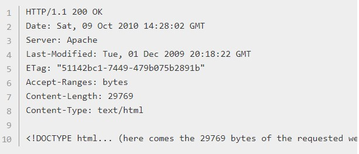

1. Abre una conexión TCP: la conexión TCP se usará para hacer una petición, o varias, y recibir la respuesta.
2.Hacer una petición HTTP: Los mensajes HTTP (previos a HTTP/2) son legibles en texto plano 
3.Leer la respuesta enviada por el servidor. 
4.Cierre o reuso de la conexión para futuras peticiones.